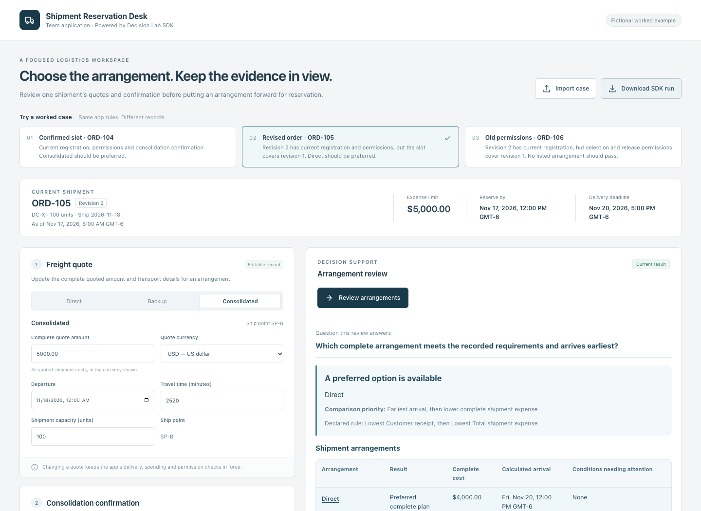
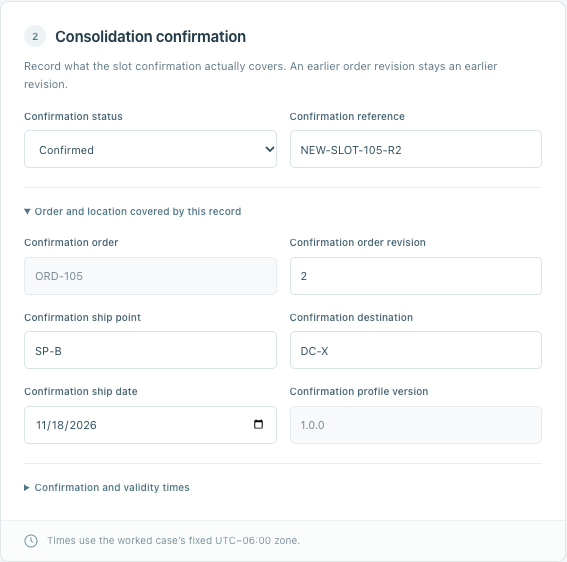
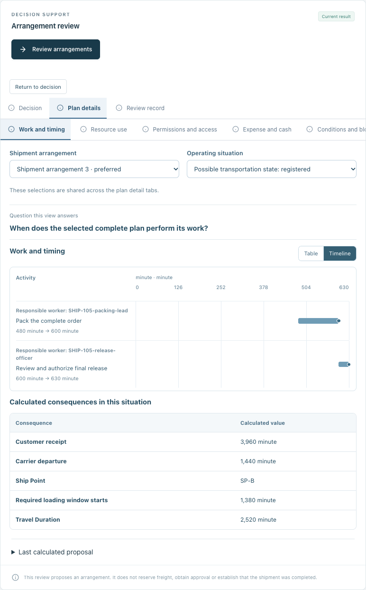

Maya’s morning exception report has narrowed the work. Order ORD-105 is now revision 2, but its consolidation confirmation still covers revision 1. Direct is the current supported proposal: $4,000, arriving Friday at noon. The launch team still wants Thursday’s arrival. Finance will accept no more than $5,000. Operations needs a confirmation that actually covers the changed order.
A new confirmation reaches Maya. Can she now put Consolidated forward, and show the team exactly why the proposal changed?
In the previous article, the CLI brought company exports into a repeated shipment review. This continuation follows one flagged shipment into a Shipment Reservation Desk: a focused React application using the Decision Lab SDK. The people, records and outcomes remain fictional.
Give one exception a working desk.
The batch report tells Maya where attention is needed. The desk lets her work through the records for a particular shipment without handing every update back to the developer.
- MayaInspect the flagged order.Check its revision, limits, deadlines and the conditions blocking an arrangement.
- Maya and the SDKRecord and reassess.Enter the supplied confirmation, review the complete shipment and compare the new finding.
- Responsible ownersReview the proposal.Use the retained calculation to support the approval and reservation handoff.
The screen keeps the order revision, destination, expense limit, delivery deadline and reservation cutoff above the editable records. Alongside the quote and confirmation forms, the shared decision view starts with the business question, comparison priority, complete arrangements and material blockers. An arrangement brings the shipment’s route, preparation, timing, resources and permissions into a complete combination that can be assessed together.
Maya selects the revised order, checks the loaded records and selects Review arrangements to establish the current proposal. Loading or importing a case prepares the form; calculation is an explicit action.
The developer connects the screen through useShipmentReview, a small React hook. It creates the Decision Lab instance and a browser worker using the public SDK:
const executor = createBrowserExecutor();
const lab = createDecisionLab({ executor });createDecisionLab comes from @decision-lab/sdk; createBrowserExecutor comes from @decision-lab/sdk/browser. The hook’s effect owns the worker and closes it during cleanup, including React’s development setup and cleanup cycle. App loading, form edits and results stay in ordinary React state.
The desk uses the same consolidation app, release 1, as the CLI example, including its earliest-arrival priority. A complete case supplies the readiness records, calendars, resources and scoped permissions behind the displayed fields. A freight quote alone cannot establish those conditions.


Record what the new confirmation covers.
For ORD-105, the current registration and permissions already cover revision 2. Consolidated’s remaining failed condition is its slot confirmation. Here, a slot is the recorded loading opportunity for the consolidated shipment; the confirmation establishes which order, ship point and interval it covers.
The form initially shows the confirmation’s original revision 1. It does not replace that value with the current order revision:
const confirmation = {
status: record?.status ?? 'none',
slotReference: record?.slotReference ?? '',
orderId: record?.orderId ?? inputs.parameters.orderId,
orderRevision: record?.orderRevision ?? '',
recipient: record?.recipient ?? '',
shipPoint: record?.shipPoint ?? quote?.shipPoint ?? '',
shipDate: record?.shipDate ?? '',
profileVersion: record?.profileVersion ?? inputs.parameters.profileVersion,
};
for (const field of confirmationTimes) {
confirmation[field] = record ? localTime(record[field], config) : '';
}Maya checks the newly issued confirmation against the changed order. In this worked continuation, the new record has reference NEW-SLOT-105-R2 and explicitly covers revision 2. Its destination, ship point, ship date and validity interval also cover this shipment. Those other details remain the same in the example.
She records the new reference and revision, reviewing the scope and confirmation times alongside them. This represents a genuinely supplied replacement confirmation. Editing the revision on an old record without obtaining that confirmation would not create evidence that the slot covers the changed order.


The desk changes only the advertised quote and confirmation fields. It leaves the case’s supporting permissions intact. If those permissions covered the wrong revision, a new slot confirmation would not repair them.
Withdraw the old recommendation while records change.
As soon as Maya edits a field, the desk shows Needs reassessment. The earlier result remains available in its comparison disclosure, while the current recommendation is cleared. It cannot keep presenting Direct as a current finding about records that have changed.
function edited() {
interrupt();
setStatus('dirty');
setIssues([]);
}The earlier run is a separate, initially closed comparison. When Maya opens it, the shared view is explicitly marked as belonging to earlier inputs:
<DecisionView report={earlierRun.report} profile={config.decisionPresentation} stale />The hook also interrupts superseded work. An abort controller and request counter prevent a late calculation for an older draft or another order from replacing the current screen.
When Maya selects Review arrangements, the hook converts the form into complete case inputs, binds them to the pinned app and asks the SDK to validate them. If validation fails, it displays the issues and stops. Otherwise, the same event handler calls lab.run to assess the arrangements and prepare the report:
const inputs = buildCase(caseData, draft, config);
const snapshot = lab.cases.create({ app, inputs });
const validation = lab.cases.validate({ app, case: snapshot });
if (!validation.valid) {
setIssues(validation.issues);
setStatus('invalid');
return;
}
const result = await lab.run({
app,
case: snapshot,
execution: { signal: controller.signal, timeoutMs: 15000 },
...(run ? { context: { priorRun: run } } : {}),
reportOptions: { scope: 'all', locale: 'en-US' },
});The SDK calls are visible in that one flow: prepare inputs, create the bound case, validate, then assess. The complete handler also supplies the earlier run as context when one exists. React retains successful current and earlier runs for the comparison. The screen reassesses on request and keeps the shipment’s recorded operating time as its basis.
With the current confirmation recorded and all other requirements still satisfied, Consolidated becomes preferred at $5,000, arriving Thursday, November 19 at 6 p.m. Direct still passes at $4,000, arriving Friday, November 20 at noon. Backup arrives Thursday at noon but costs $6,000, exceeding the expense limit.
The priority matters: the app prefers the earliest arrival among arrangements that pass. Consolidated’s extra $1,000 buys an earlier arrival than Direct while staying within the recorded limit.

The worked cases use a fixed review basis of Tuesday, November 17, 2026 at 8 a.m., UTC−06:00, with a noon reservation cutoff. This continuation changes the supplied confirmation while retaining that clock. The receipt records when the calculation was made; a fresh complete case is needed to advance the operating “as of” time.
Keep blocked shipments and input problems distinct.
The same interface must help Maya when a record fails to resolve the problem. The prepared cases and quote form demonstrate four different situations:
| Recorded situation | Finding | Business response |
|---|---|---|
| Current permissions and confirmation | Consolidated preferred: $5,000, Thursday at 6 p.m. | Review the earlier-arrival proposal for operational handoff. |
| ORD-105: current permissions, old-revision confirmation | Consolidated blocked; Direct preferred: $4,000, Friday at noon. | Review Direct or obtain a current consolidation confirmation. |
| ORD-106: permissions cover the old revision | No listed arrangement passes. | Obtain the appropriate current authorizations. Updating the confirmation alone is insufficient. |
| A quote is entered in EUR | Input correction required; no current recommendation. | Supply a supported USD quote. This adapter provides no currency conversion. |
The currency diagnostic comes from the form adapter before SDK evaluation. A complete calculation in which no arrangement passes is a business finding. A cancelled, incomplete or unavailable calculation cannot establish a current proposal. The desk keeps an earlier complete result labelled as the comparison instead of using it as a fallback recommendation.
Reuse the decision screen and keep its complete basis available.
The developer passes the retained report to DecisionView from @decision-lab/react-views:
import { DecisionView } from '@decision-lab/react-views';
import '@decision-lab/react-views/styles.css';
<DecisionView report={run.report} profile={config.decisionPresentation} />The SDK prepares the decision projection; the shared React component presents it. Maya sees the supported finding, the arrival-first comparison priority, complete alternatives, costs and material blockers before opening the detailed analysis. The application’s presentation profile supplies business labels, selected report fields and explicit currency and time formatting.
Rendering that report does not assess the edited form, renew a permission or change the ranking. The full calculation remains the basis. Distinct complete arrangements and genuine preferred ties stay distinct; a presentation setting cannot turn a failed requirement into a pass.
Maya can select an arrangement and open Selected option details for its requirements and schedule. Technical inspection → Inspect complete report opens the complete native report, including its schedule and representation controls. Return to decision brings her back to the comparison without another calculation.


The developer reuses both the modeled review and this report interface. They still own the shipment forms, trustworthy record mapping and result lifecycle. A different business requirement belongs in a reviewed app release; business wording and display columns belong in the presentation profile.
Carry the complete review into the handoff.
Maya can retain more than a screenshot of the preferred option. The desk’s Download SDK run control saves the complete native decision-lab-run/1 result, including its evaluated inputs, assessment and prepared report:
downloadRun() {
if (status === 'complete') download(`${caseData.id}-run.json`, run, labRef.current);
},The SDK renders the run as JSON for the download; the working screen presents tables and explanations. Its identity records the app release used for the calculation. A complete blocked result can be retained too. The download becomes available only when a complete current result exists.
Download case inputs separately saves the canonical inputs for a handoff to another tool or a later review. The desk can import those inputs, or a case bound to the pinned app, and prepare the form for a fresh assessment.
The earlier result remains in its comparison disclosure in the current React session; it is not bundled into the current SDK-run download. The screen has no automatic browser save or archived-run restoration. Maya retains the case inputs before leaving if she needs to preserve her edits, and keeps any calculation records needed for the handoff.
That record supports the team’s review of the proposal. It does not authenticate the carrier’s confirmation, grant authority or reserve freight. Actual approvals and booking remain with the responsible people. The example also assesses one shipment with its own recorded resources; it does not allocate a shared truck, dock or cash pool across the batch.
A team’s interface. A consistent shipment review.
Maya can now explain the change to both launch and finance: the current confirmation removes Consolidated’s blocker; the arrival-first rules prefer its Thursday delivery; and the $5,000 expense stays within the limit. Operations can inspect the record that supports the proposal before proceeding.
The CLI gave her a list of shipments needing attention. The SDK lets a developer put the same review inside a working interface for resolving one of those exceptions. Reusable decision patterns remain behind the published app; the surrounding forms, labels and handoff reflect the team’s own work.
The Shipment Reservation Desk repository directory provides the public example and prepared cases. The current client source snapshot contains the shared-view integration shown here, including its forms, browser-worker lifecycle and tests. Excerpts link to their exact retained source or the unchanged public implementation they describe.
Use the CLI to find the shipment exceptions. Use a custom SDK interface to work through the records and review the resulting proposal.